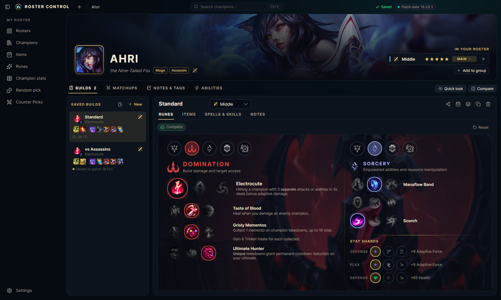
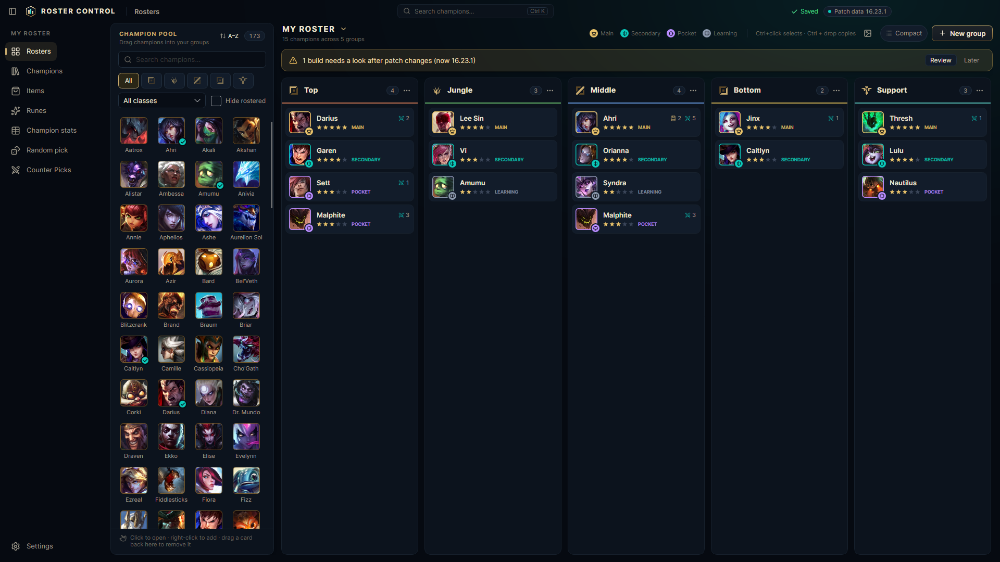
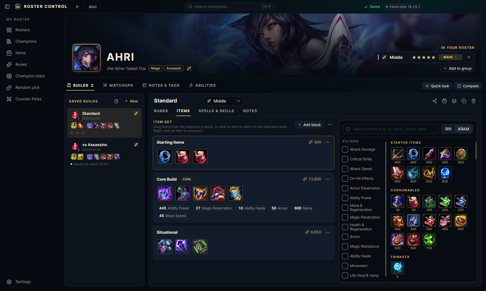
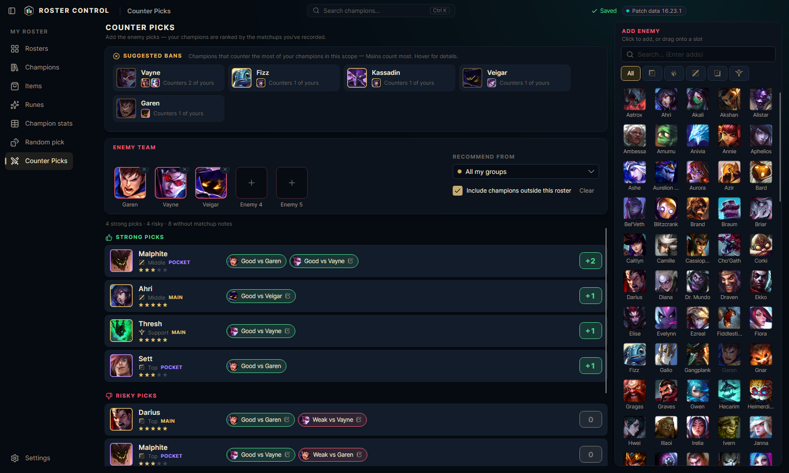
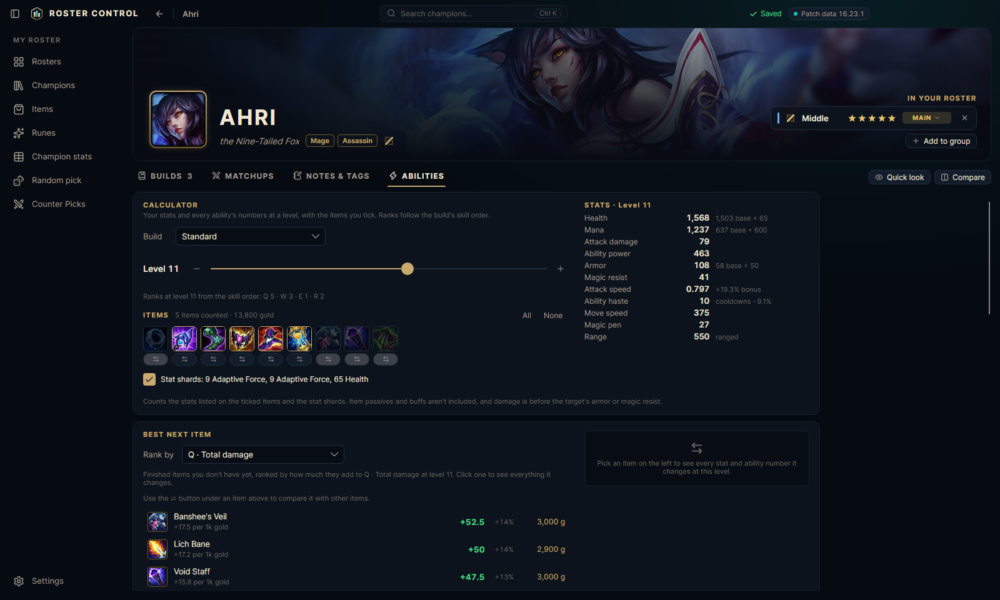
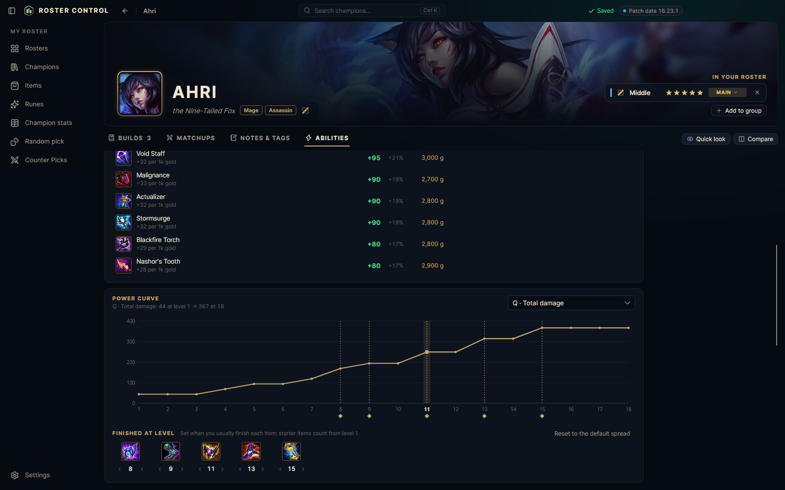
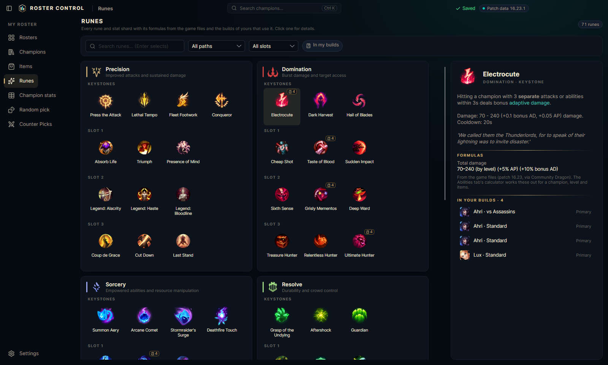
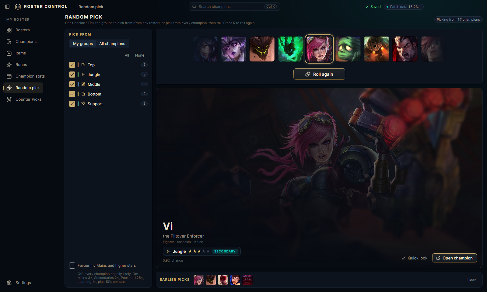

Builds with client-style rune pages
Any number of builds per champion: a rune page that works like the client's, summoner spells, an 18-level skill order and notes. Share a build with a short code.
Roster Control · free for Windows
Organise your LoL champion pool into roster groups, rate each champion, save rune pages, item sets, summoner spells and skill orders, record matchups and get counter picks from your own notes. When you can't decide, the built-in champion randomizer rolls one for you.
Windows 10/11 · portable, no install · no Riot login · updates itself · free and open source (MIT)

One place for the champions you play, how you build them and who you play them into, kept up to date with every patch.

Any number of builds per champion: a rune page that works like the client's, summoner spells, an 18-level skill order and notes. Share a build with a short code.

Drag items in from the shop, see build paths and gold totals, and copy the set into the League client's item set import.

Record who each champion is good or weak against, per role. Counter Picks ranks your roster against up to five enemies and suggests bans.

Your stats and every ability's real numbers at any level with your build, from the current patch's game files.

See which item adds the most to the number you care about, and how your damage or health grows from level 1 to 18.

Every rune with its formulas, every item with gold efficiency, and every champion's base stats at any level, sortable.

Can't decide what to play, or want a challenge? Random pick is a random champion picker built into Roster Control.
Roster Control is a separate app. It doesn't need your account and stays out of the game.
It doesn't read, change or automate the League client or the game. You pick champions yourself.
Champions, items, runes and ability numbers come from Riot's Data Dragon, Community Dragon and Meraki Analytics, refreshed every patch.
Everything is saved next to the app, with daily backups. Copy the folder to move it to another PC.
New versions download in the background; restart when you're ready. Your data is kept.
Yes. It's free and open source under the MIT licence, with no ads, accounts or paid features.
Open Random pick (Ctrl+8), tick the roster groups to roll from or choose All champions, and press Roll. A reel of champion portraits spins and lands on a random champion. Every champion is equally likely unless you choose to favour your Mains and higher-rated champions.
No. It never reads, modifies or automates the League client or the game, and needs no Riot login. It only uses public data from Data Dragon, Community Dragon and Meraki Analytics.
Windows 10 or 11 (64-bit). Download the portable zip from the latest release, unzip it anywhere and run Roster Control.exe. No install or admin rights are needed. Windows SmartScreen may warn about an unsigned app the first time: choose More info, then Run anyway.